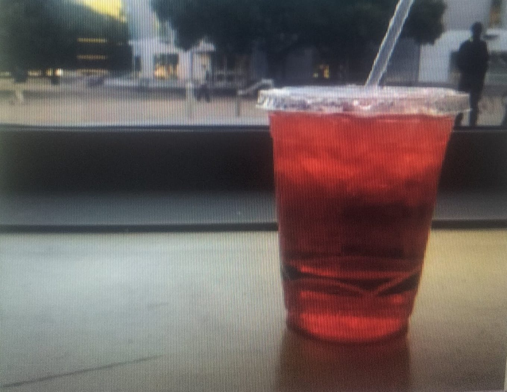
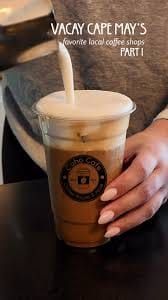
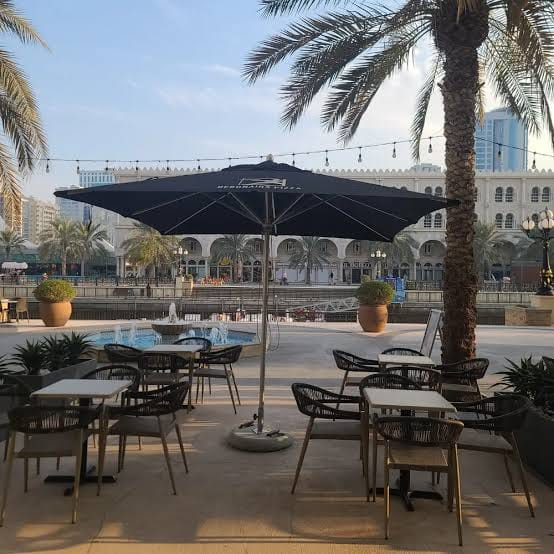

Victor Kirst
Last update Apr 7,2017
1. Italian soda at Bytes
350 Serra Mall,Stanford, CA
When’s the last time you’ve had an Italian soda? It had been a while for me, but I wanted to join my friend for a non-caffeinated beverage at Bytes and I became reacquainted with the combination of fizzy water and artificial fruit syrup. Italian sodas are not so sweet as a normal soda and do not taste as flat as a flavored carbonated water. The Italian sodas at Bytes also have cream in them (or maybe they do if you ask; I haven't tried), which makes it a nice coffee shop alternative for the times when you're feeling a refreshing drink that doesn't have caffeine or milk.
RecommendationVanilla Bean Latte

2. Bubble tea at Pop Tea Bytes
456 combridge Ave, Palo Alto, CA
When your boba craving strikes, head over to Pop Tea Bar, a cute little bubble tea shop on Cambridge Avenue. The menu is your standard bubble tea fare, with nothing too adventurous, but everything is made fresh and the tapioca pearls are chewy and not too sweet. The shop is small and cozy, which makes it a nice place to sit with a friend or to grab a drink on the way back from class.
RecommendationTaro milk tea with boba

3.Latte at CoHo
459 Lagunita Dr, Stanford, CA
CoHo is the student-run coffee house in the middle of campus, and it is the place to go when you need a real caffeine fix between classes. The latte is smooth, with a rich espresso flavor and a thick layer of creamy foam on top. The prices are student friendly, and the staff will happily make it with oat or almond milk if you prefer.
RecommendationVanilla bean latte

4.Agua Fresca at Nexus Cafe`
Escondido Mall, Stanford, CA
When the afternoon sun gets too hot, grab a cold agua fresca from Nexus Café and find a seat outside under the umbrellas. The drink is light and refreshing, made with fresh fruit, water, and just a little sugar, so it is not too sweet like a soda. The outdoor patio is shaded by big trees, which makes it a peaceful spot to study or to catch up with friends between classes.
RecommendationWatermelon agua fresca
